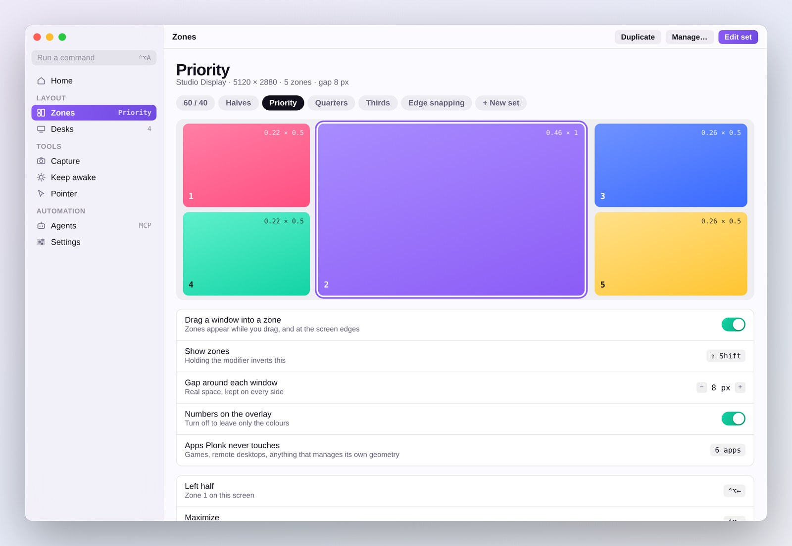
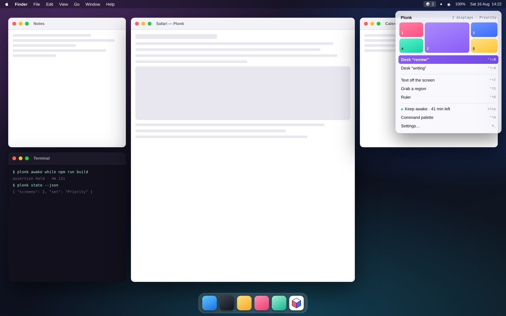

Every zone, every workspace, every settings page, every shortcut. The same list of verbs an agent gets over MCP, with a search field in front of it.
Draw the boxes you actually want. Then drop windows into them — with a drag, a key, or by saying so out loud.
macOS 13 or newer, Apple silicon · free and MIT · no account, no cloud, no telemetry
Three ways
The zones light up while the window is in your hand. Hold ⌘ and it takes two of them at once. Grab-and-move lets you pull a window from anywhere inside it, not just the title bar.
Nine zones live on the digits: ⌃⌥1–⌃⌥9. Zero is the oops key — it puts a window back exactly where it was before Plonk touched it.
Hold ⌃⌥V and name the place. It listens on the Mac, offline and on-device, and the common commands run in the app itself. Nobody hears you but the laptop.
The whole sheet is on the hotkeys page. Every one of them is rebindable, and any of them can be left unbound.
Zones
Any number of zones, any size, a different set on every monitor, overlapping if that suits you. Click a zone to cut it in half, ⇧-click cuts the other way. That is the whole editor.
Watch the plum rectangle. Swap the set on a screen and any window already sitting in a numbered zone moves to wherever that number is now — it changes shape, never its number, and so never its colour. That is the part no preset-grid manager does.
Five sets ship in the box; past those you draw your own, or describe it and let an agent build it. Everything zones can do — overlap, gaps, hiding the numbers, and the list of apps Plonk keeps its hands off.
The app
Anything the app can do has a name you can type. The theme is yours to pick, and the zone overlay and the heads-up display follow it.


Every zone, every workspace, every settings page, every shortcut. The same list of verbs an agent gets over MCP, with a search field in front of it.
Zone 1 is rose, 2 plum, 3 blue, 4 mint, 5 sun — in the overlay, in the editor, in the menu bar and on this page. One fact, said twice.
Workspaces
Save the desk once: the apps, every window's frame, the display each one belongs on, and what each app should open on the way up. Close the lot, go home, come back — and it builds itself again.
Monitors are keyed by display UUID, so unplugging one does not scramble them. How workspaces work, including the one thing macOS will not let them do.
For agents
Twenty MCP tools across layouts, workspaces, zones, keep-awake, screenshots, on-device OCR and measuring. Generic automation can nudge someone else's window around. This is the window manager itself.
Frames are fractions of a monitor's visible area, origin top-left — so “left 60%” is literally {x: 0, y: 0, w: 0.6, h: 1}. The same number the app prints inside each zone, so the interface and the API never disagree.
# Claude Code claude mcp add plonk -- npx -y plonk-mcp # Codex CLI codex mcp add plonk -- npx -y plonk-mcp
Cursor, Zed, Cline and anything else that speaks MCP work the same way, over stdio or HTTP — several at once is fine, and Plonk shows you who is connected.
All twenty tools, the multi-agent rules and the CLI · one-pagers for Cursor, Zed and Cline. For Claude Desktop there is nothing to type: open the .mcpb bundle from the latest release.
And seven smaller things
Select an area and the words are in your clipboard — a screenshot, a paused video, a PDF that will not let you select. On-device.
How far the pointer can travel each way before it meets an edge. Points and pixels both, because a 44-point tap target is 88 pixels and only one of those is in the asset.
Float a live crop above everything else: a build log, a chart, a call, visible in a corner while you work over it. Streamed, never written down.
Real power assertions, not a jiggler. Sessions end by themselves: after N minutes, at a wall-clock time, or the moment a process exits.
Region, window or screen, then pen, arrow, rectangle, ellipse and highlighter. Saved at native resolution.
Every shortcut the front app actually has, read from its own menus rather than from a table someone has to keep up to date.
Everything else, in full — pointer tools, grab-and-move, notices, and how an update is checked before it is unpacked.
Privacy
No account, no cloud, no telemetry. Plonk moves rectangles around, and that is all it wants from your Mac.
Moving another app's windows costs an Accessibility grant, and a screenshot costs Screen Recording. That is a lot to hand something you installed a minute ago — so none of this is a promise. It is all checkable from a terminal.
# every socket the app has open
lsof -nP -i -a -p "$(pgrep -f Plonk)"
plonk … TCP 127.0.0.1:43917 (LISTEN)
One listener, on loopback. The only outbound call is the update check, which sends no identifier and can be switched off.
# a web page cannot drive it curl -so /dev/null -w '%{http_code}\n' \ -H 'Origin: https://example.com' \ http://127.0.0.1:43917/state 403 # nor can another program on your Mac curl -so /dev/null -w '%{http_code}\n' \ http://127.0.0.1:43917/state 401
The API is gated on a token only you can read, so a script cannot borrow Plonk's Screen Recording by asking the port.
Releases are built and signed on GitHub's runners and ship with an attestation, so the binary on your Mac ties back to the commit it came from:
Check it yourself is every claim above with the command that tests it. SECURITY.md says where each promise stops.
Install
brew install --cask ostapondo/plonk/plonk
Signed, built and attested on GitHub's runners — check the binary against the commit before you open it.
Plonk is signed but not notarized, so macOS holds a copy you download by hand; the cask clears that for you. And it is early — version 0.2.x, one author. Shortcuts, zone files and workspaces are settled; the MCP tool names and the HTTP API can still change between minor versions.
Or help build it. It compiles and tests on a plain checkout with no signing certificate and no account: CONTRIBUTING.md is five commands long, and the good first issues each say where the code is and how to tell it worked. The smallest useful change is one JSON file in zone-sets/.